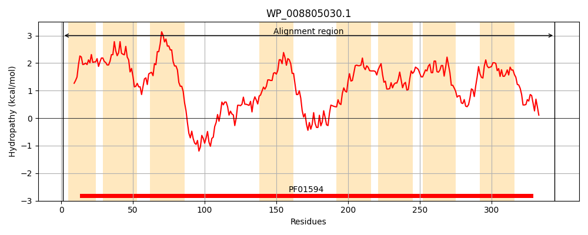
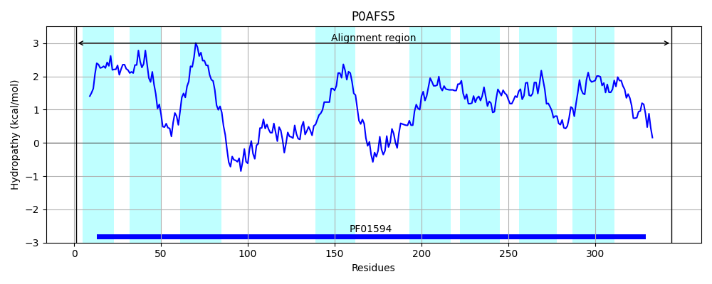
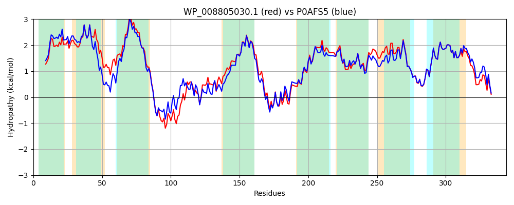

Hit Accession: P0AFS5
Hit TCID: 2.A.86.1.4
Hit Description: gnl|BL_ORD_ID|8839 gnl|TC-DB|P0AFS5|2.A.86.1.4 UPF0118 inner membrane protein ydgG - Escherichia coli
Mach Len: 344
e:0.000000
Query TMS Count : 8
Hit TMS Count: 8
TMS-Overlap Score: 8.700000
Predicted Substrates:CHEBI:40646;autoinducer-2
BLAST Alignment:
Score: 1395 , Bit scores: 541 bits, E-value: 0.0e+00, Alignment length: 344, Percentage identity: 81
Query: 1 MAKPIITLNGLKMVIMLGMLVIILTGIRFAADIIVPFILALFLAVIINPLVQLLVRCRVPRVLAISMLIGLIVMLAIVLLASLGTSLNELARTLPQYRNYLYEPMQTIAPWLQRMGFTVSVVELNKYIDPNAVMTLVTSLLTQLSNAMSSIFLLLLTVVFMLLEVPQLPAKLQQLMSRPVEGMGAIQRAIDSVSHYLVLKTAISLVTGLVVWGMLVLLDVRFAFMWGLLAFALNYIPNIGSVLAAIPPILQVLVFGGLYEALVVLAGYLIVNLVFGNILEPRVMGRGLGLSTLVVFLSLIFWGWLLGPVGMLLSVPLTIIAKIALEQTSGGQSIAFLLSDVSKE 344
MAKPIITLNGLK+VIMLGMLVIIL GIRFAA+IIVPFILALF+AVI+NPLVQ +VR RVPRVLA+S+L+ +IVM ++LLA LG++LNEL RTLPQYRN + P+Q + P LQR+G VSV +L YIDPNA MTL+T+LLTQLSNAMSSIFLLLLTV+FMLLEVPQLP K QQ+M+RPVEGM AIQRAIDSVSHYLVLKTAIS++TGLV W ML LDVRFAF+WGLLAFALNYIPNIGSVLAAIPPI QVLVF G YEAL+VLAGYL++NLVFGNILEPR+MGRGLGLSTLVVFLSLIFWGWLLGPVGMLLSVPLTII KIALEQT+GGQSIA LLSD++KE
Sbjct: 1 MAKPIITLNGLKIVIMLGMLVIILCGIRFAAEIIVPFILALFIAVILNPLVQHMVRWRVPRVLAVSILMTIIVMAMVLLLAYLGSALNELTRTLPQYRNSIMTPLQALEPLLQRVGIDVSVDQLAHYIDPNAAMTLLTNLLTQLSNAMSSIFLLLLTVLFMLLEVPQLPGKFQQMMARPVEGMAAIQRAIDSVSHYLVLKTAISIITGLVAWAMLAALDVRFAFVWGLLAFALNYIPNIGSVLAAIPPIAQVLVFNGFYEALLVLAGYLLINLVFGNILEPRIMGRGLGLSTLVVFLSLIFWGWLLGPVGMLLSVPLTIIVKIALEQTAGGQSIAVLLSDLNKE 344 | Protein Hydropathy Plots: |
|---|
|  |  |
Pairwise Alignment-Hydropathy Plot:
|
|---|
|  |